1879: Birth
Born in Ulm, Germany. Showed early curiosity in science and mathematics.
The man who revolutionized our understanding of the universe.
“Imagination is more important than knowledge.”
— Albert Einstein
Born in Ulm, Germany. Showed early curiosity in science and mathematics.
Published four groundbreaking papers, including special relativity and E = mc².
Completed the theory of general relativity, reshaping our understanding of gravity.
Received the Nobel Prize for explaining the photoelectric effect.
Died in Princeton, USA, leaving a legacy that continues to shape modern science.
Albert Einstein (1879–1955) wasn’t just a theoretical physicist — he was a thinker who reshaped how humanity understands the universe. From a curious child in Ulm to a global icon, Einstein never stopped asking bold questions.
At 26, he published papers that changed physics forever, including his famous equation E = mc². His ideas on light, energy, and space earned him the 1921 Nobel Prize.
In 1933, Einstein left Germany as Nazism rose and moved to the United States. At the Institute for Advanced Study in Princeton, he continued to contribute to science while becoming an influential voice on political and social issues.
Beyond physics, Einstein loved music (he played the violin), enjoyed sailing, and kept a playful, curious spirit. He engaged publicly on civil rights and disarmament, using his platform to speak for humanitarian causes.
Despite worldwide fame, he remained modest: “I have no special talent. I am only passionately curious.” His work still powers modern technology and shapes how scientists explore the universe.
 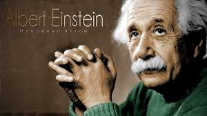
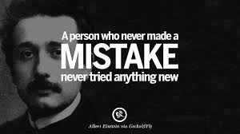
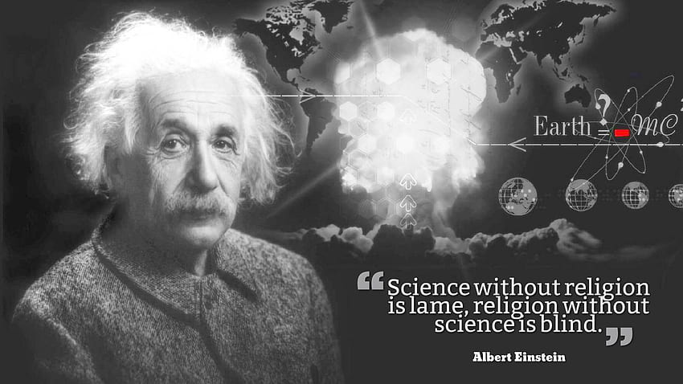
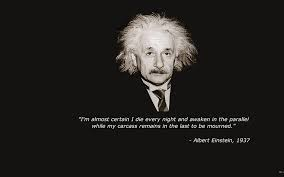
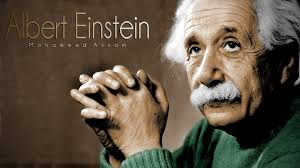
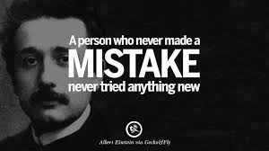
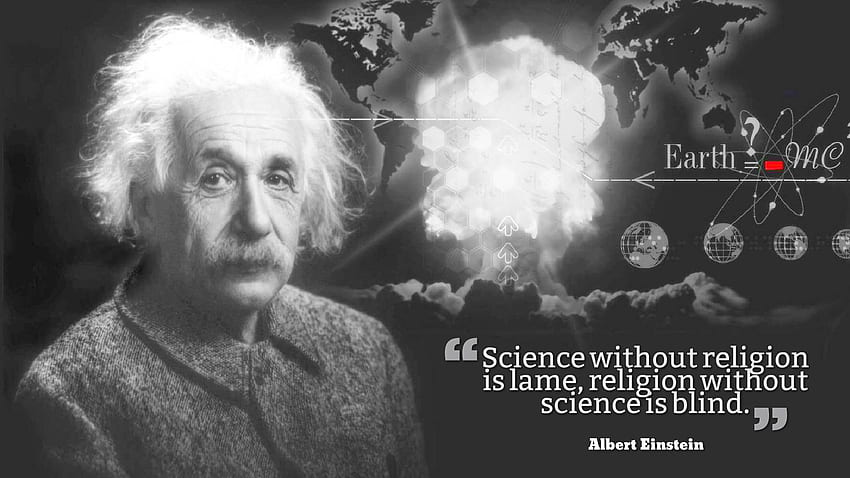
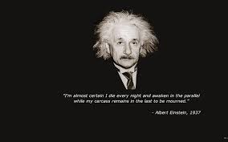


 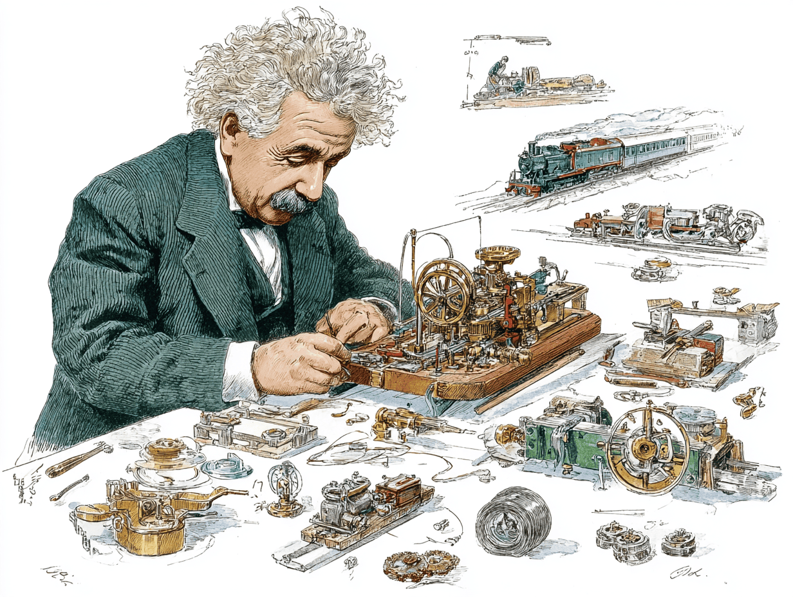
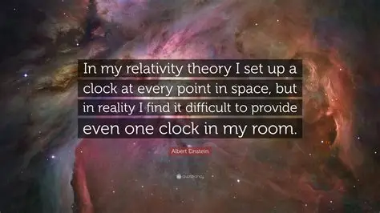
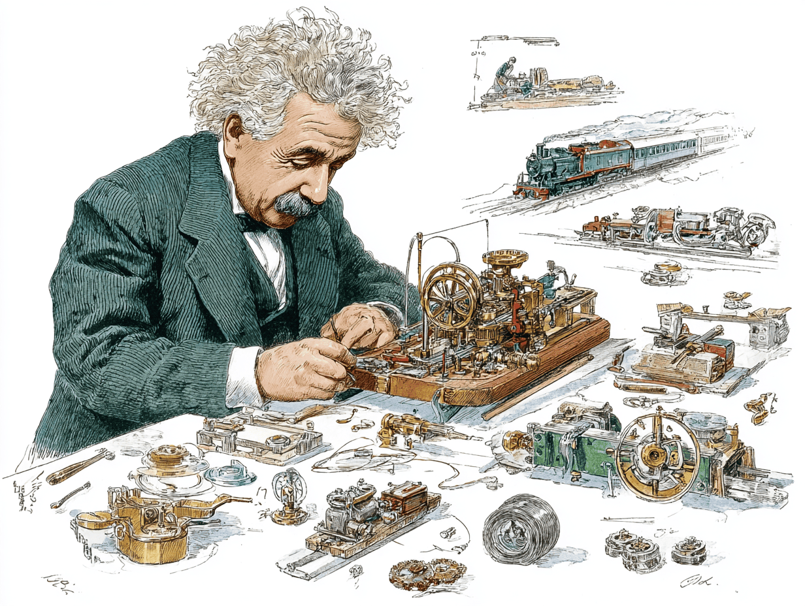
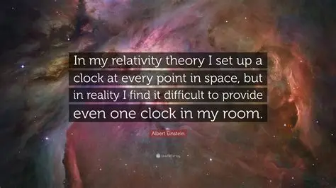
“The only source of knowledge is experience.”
— Albert Einstein
“Life is like riding a bicycle. To keep your balance, you must keep moving.”
— Albert Einstein
“I have no special talent. I am only passionately curious.”
— Albert Einstein